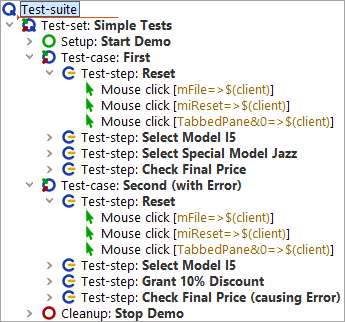

| Version 6.0.3 |
In this chapter we will work with the test-suite FirstJavaTests.qft you
already know from chapter one.
qftest-6.0.3/doc/tutorial of the QF-Test installation to
a working directory and
Please have a look at the test-step "Reset" in the two test-cases. They are exactly the same.
|
|  | ||
|
| Figure 3.1: Two identical test-steps | ||
Following above concepts it would be a good idea to turn them into a procedure.
| Last update: 9/6/2022 Copyright © 2002-2022 Quality First Software GmbH |